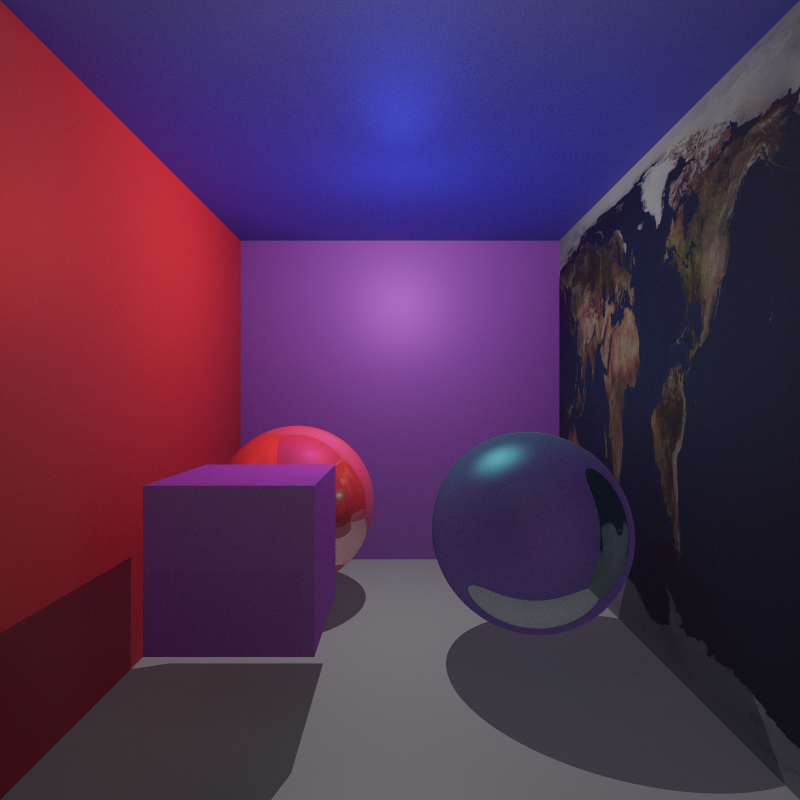
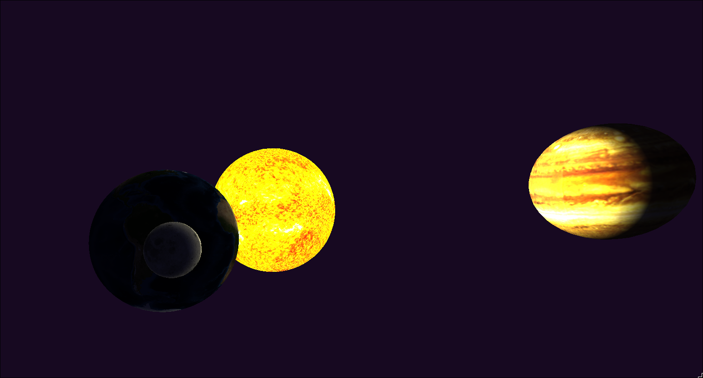

This is my opinionated templated c++20 mathematics library. I've made it to learn what goes into a math library and to be able to play with math objects in code. Of course there is a vector and matrix math implementation, but I also implemented objects from projective geometric algebra, different color spaces conversions, and interpolation functions to name a few. I've used this library in multiple computer graphics and image processing projects for my master's degree.
This library is available on github under the MIT attribution license.

A scene rendered in a CPU raytracer made using this math library.

An image from an ECS game engine I made for my master's.